Set up your team and clients, triage the work, watch the day live, and invoice it.
As an Admin you run the system. You create the structure the work hangs off, you decide which tasks are real, you watch the day as it happens, and you turn finished work into invoices.
The app shows three roles: Admin, Client and User. Anyone with coordinator, owner or system-administrator rights shows as Admin — there is one badge, not three.
| TIP Admins are never locked out by the workday gate. A User must tap Start Workday before they can touch anything; you can act at any time, on any task. |
On a brand-new install you first point the app at your Odoo server. Enter your Server URL, wait for the database list to load, pick your database from Select a database, then enter your Odoo Username or Email and Password, and tap Login.
This sets the device up — it does not log a person in. Users still sign in with their own mobile number afterwards.
| TIP To reach this screen again later, tap the 369 logo seven times on the sign-in screen. It is deliberately hidden so ordinary users cannot repoint the app by accident. |
|
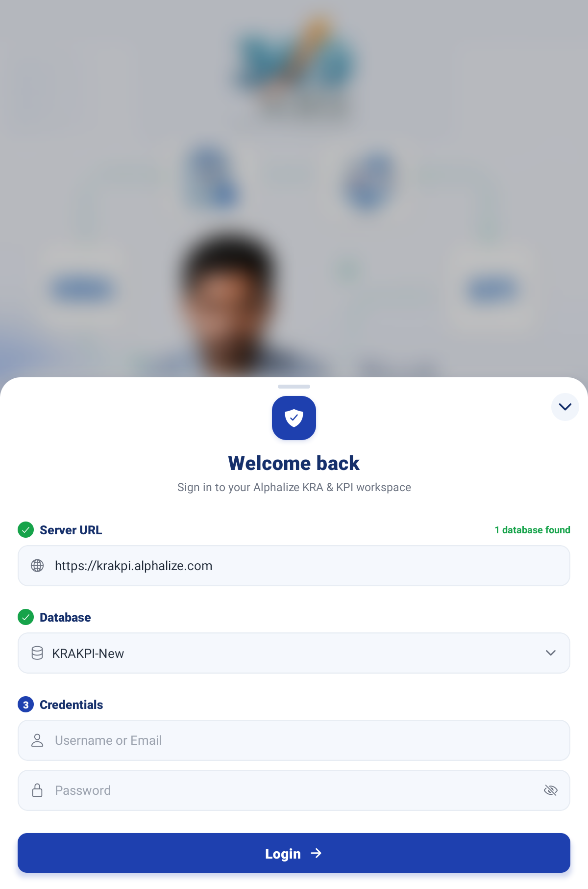 The Connect screen — Server URL, database picker, username and password |
Sign in with your own mobile number and password, exactly as everyone else does. Your Home screen carries every tile, grouped under KRA / KPI, Reports and Settings.
New tiles: Reminders (personal reminders, see the User Guide), and under Reports, KRA Report and Employee Tracker (both in Part 6).
When you have a task running, a live card at the top of Home shows it with its timer and a Pause button. Tap the card to open the task on the board, or use the arrows in its header to switch between IN PROGRESS and TODAY.
|
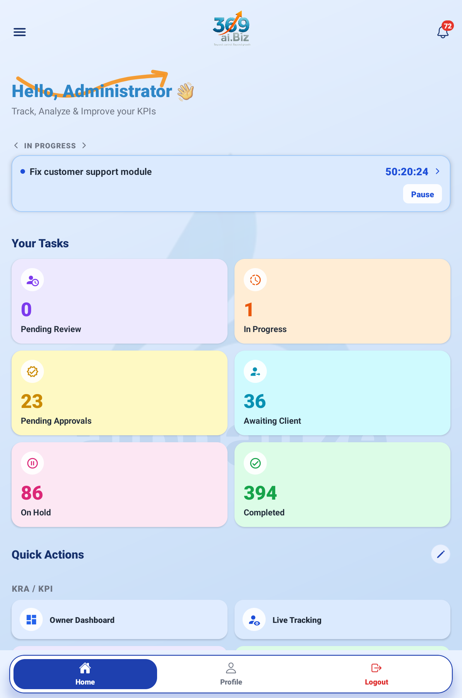 Admin Home screen — the In Progress card with Pause, and the Your Tasks counters |
|
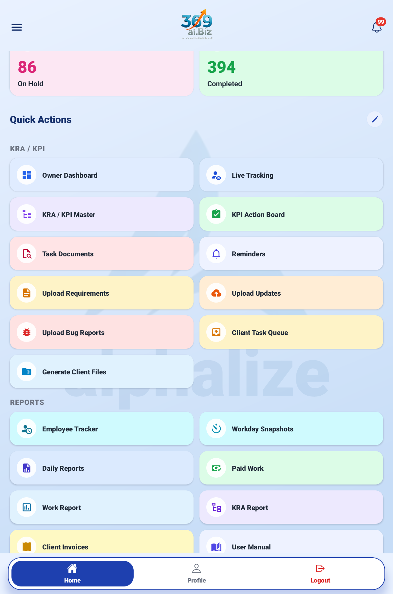 The Quick Actions grid — including the new Reminders, Employee Tracker and KRA Report tiles |
Open Company Branding. Set your Company Name, then use Choose Image to upload your Company Logo (or Remove to clear it). Tap Save Branding.
This is what appears on the PDFs your clients receive — invoices and reports — so do it before you send anything out.
|
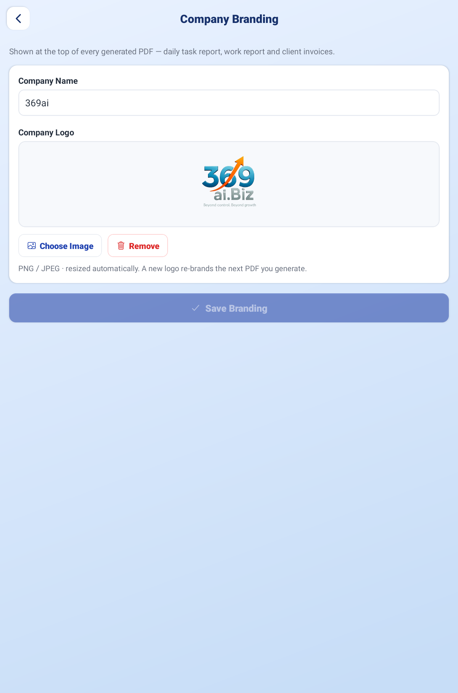 Company Branding — name, logo and Save Branding |
Open Configuration. Every setting saves itself as you change it — a tick flashes to confirm. There is no Save button. If the server refuses a change, you see ✕ not saved with the server’s reason instead of the tick — the same goes for Users and Login Management (for example Not reset ✕).
Card 1 — Timers
| Setting | What it controls |
|---|---|
| Client approval window (minutes) | How long a client has to approve an assigned developer before it releases on its own. |
| Queue re-nudge gap (minutes) | How often a client is reminded about a task sitting unread in their queue. |
| Urgent re-nudge gap (minutes) | How often an unread urgent pause is chased. |
| Break reminder (minutes) | Default 15. How long a break runs before the developer is reminded, and the gap between repeats (up to 4 reminders). |
| Lunch reminder (minutes) | Default 30. How long lunch runs before the developer is reminded. Sent once. |
| Meeting reminder (minutes) | Default 30. How long a meeting runs before the developer is reminded it is still counting. Sent once. |
| Daily break budget (minutes) | Default 60. Break and lunch added up for the whole day — catches many short breaks that never hit the limits above. Meetings are not counted. Sent once a day. |
| Standard workday (hours) | The working day length everything is measured against. |
| NOTE The four break reminders go to the developer only — admins are not notified. Set any of them to 0 to turn it off. |
Card 2 — Daily Task Report & Retention
| Setting | What it controls |
|---|---|
| Send daily employee task report (PDF) | Turns the automatic daily report on or off. |
| Send time (IST) | What time of day it goes out. |
| Report covers | Whether it reports the Previous day or the Same day. |
| Keep workday snapshot images for | How long end-of-day snapshot images are kept. Set 0 to keep them forever. |
| Keep generated report PDFs for | How long generated PDFs are kept before being purged. |
Card 3 — Developers — Multi-task & WhatsApp
One row per person. For each you can:
Card 4 — Attendance (only when the HR attendance bridge is installed on your server)
| Setting | What it controls |
|---|---|
| Show attendance in the app | Off by default. Turn it on and every user and admin gets a round floating Attendance button at the bottom-right of Home. Users see their own HR attendance — today, this week, the month’s counts and a day-by-day history. Admins and HR also get a Team tab showing everyone for a day. Clients never see the button. Turn it off and the button disappears on the next Home load. |
| NOTE The screen is read-only. Check-in and check-out still come from Start Workday and End Workday; the bridge writes them into HR attendance, and the grading (Present / Late / Half day / Absent) is done by the attendance app’s Office Hours rules. A person whose login is not linked to an HR employee sees “Not linked to HR yet” and appears under Not in HR on the Team tab. |
|
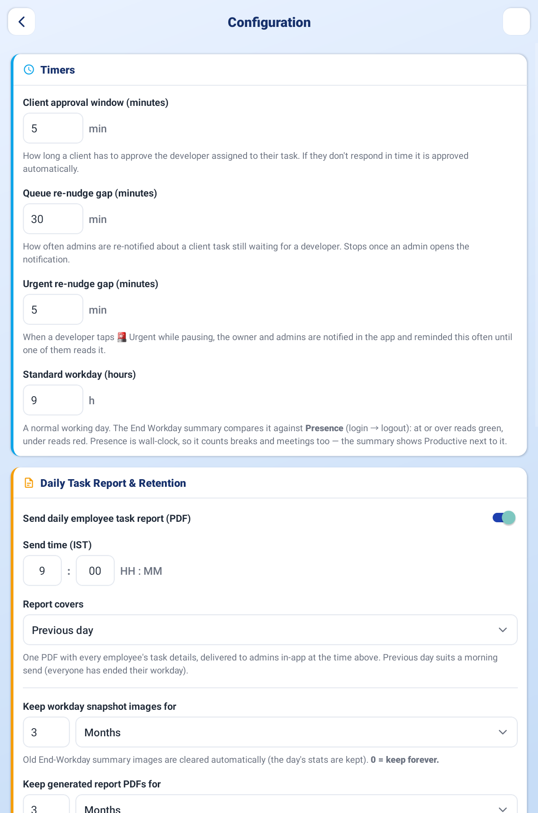 Configuration — the Timers card and the Daily Task Report & Retention card |
|
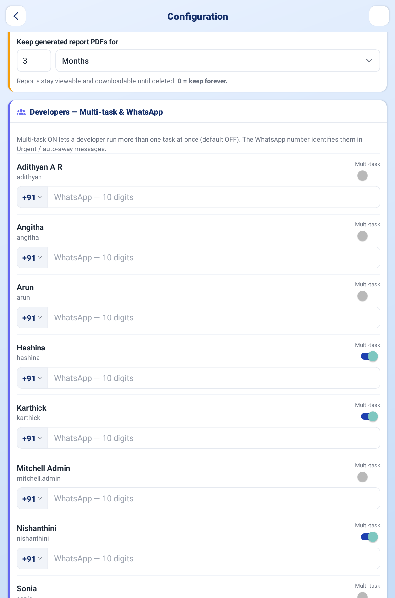 Configuration — the Developers card with the Multi-task toggles |
Open Users. Each person shows their Name, Login, Email, KRA / KPI Role, Mobile and whether they are Active. Use the Active and Archived tabs to switch between current and former staff.
The KRA / KPI Role is the important field. It decides everything the person can see and do:
| Role | Who it is for |
|---|---|
| Admin | You and your coordinators. Full access. |
| Client | External customers. They see only their own work. |
| User | Your team members who do the work. Board, workday and their own records. |
You can also Change Password for someone, or Reset password to 1111 if they are locked out.
|
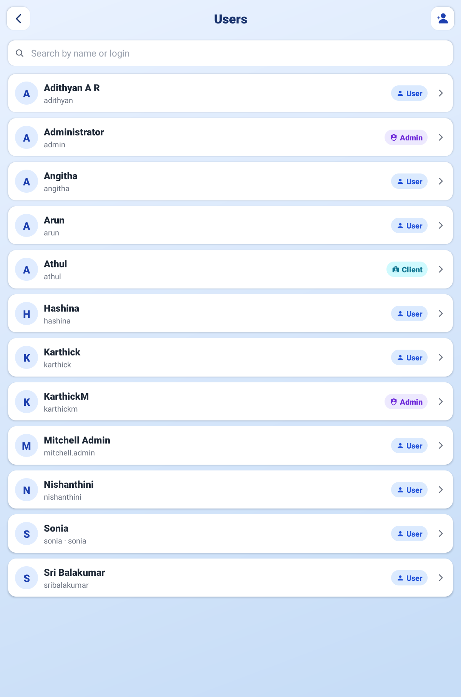 The Users screen — the list with the KRA / KPI Role column and the Active / Archived tabs |
Open Login Management. It has three parts:
| IMPORTANT Login codes are delivered over WhatsApp. If the sender is not connected here, nobody can reset their password. Check this screen first whenever someone reports they cannot get a code. |
|
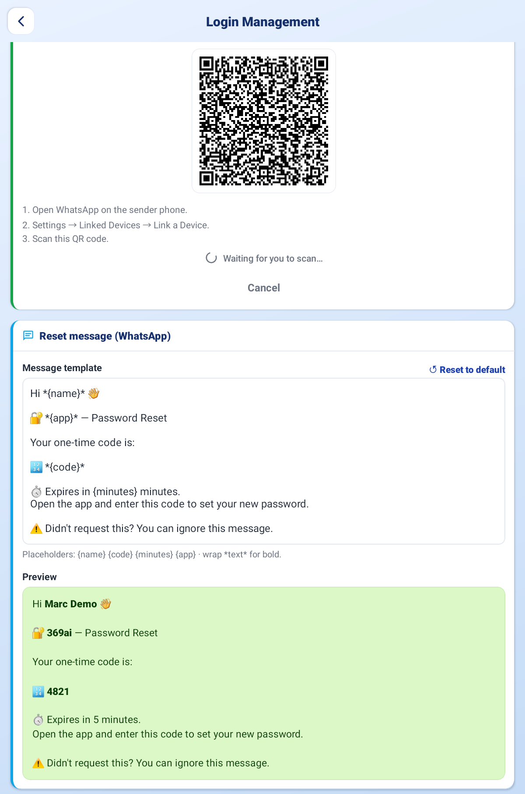 Login Management — team members, the WhatsApp QR panel and the message template |
Open KRA / KPI Master. Everything is a tree with three levels:
| Level | What it is | Example |
|---|---|---|
| KRA (top) | Your client. | Alphalize |
| Sub-KRA | A project or phase for that client. | Phase 2 |
| KPI | The actual task someone works on. | Build the login screen |
| IMPORTANT Deleting a KRA deletes every project and task under it. There is no undo. If you only want it out of the way, rename it rather than delete it. |
|
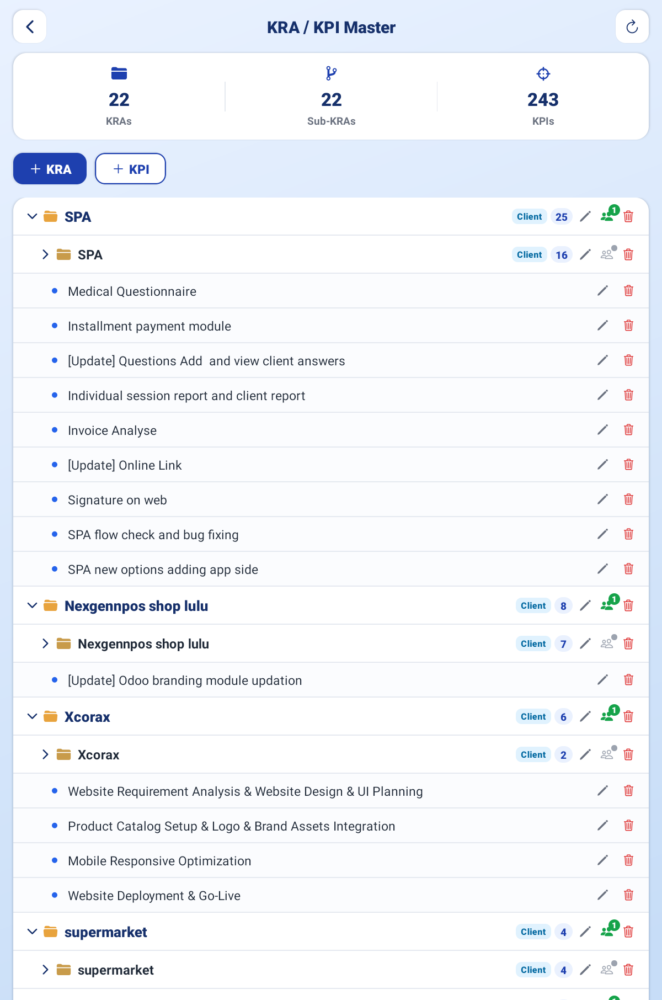 KRA / KPI Master — the tree with the KRA + and KPI + buttons |
Open a KRA and use Assign clients to say which client logins can see it. If you have not made any yet, the sheet tells you: “No client logins exist yet. Create one in Login Management.” You can create the client login from here.
|
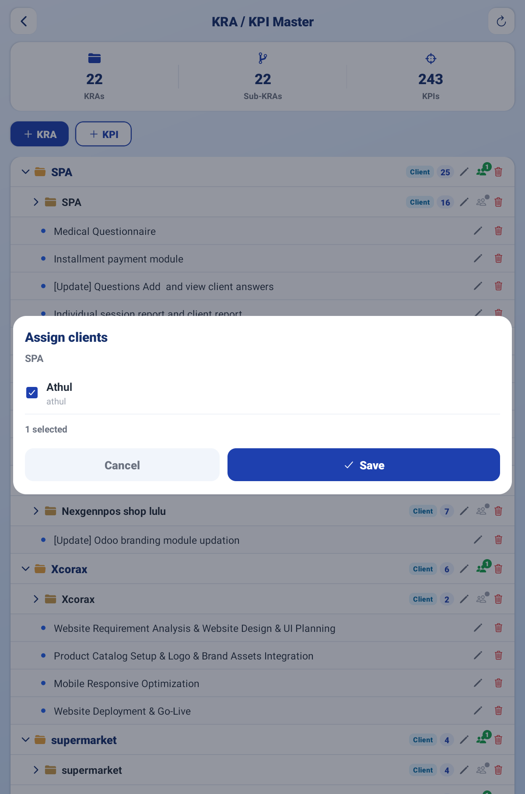 The Assign clients sheet |
Open Client Task Queue. This is where work your clients have sent in waits to be turned into proper, assigned tasks. Drill down: Date → Client → Task.
Open a task and fill in the details:
| Field | What to put in it |
|---|---|
| Ref ID | Filled in for you. Override only if you must. |
| Task Name | Rewrite the client's wording into one clear job if needed. |
| Description | The detail the developer needs. |
| Estimate Hours / Minutes | How long it should take. This drives reporting and per-hour billing. |
| Priority | Regular, Important or Urgent — this decides which lane it lands in. |
| Linked Req | For updates and bugs, the requirement they relate to. |
| Assign Developer | Who is going to do it. |
Then choose:
| IMPORTANT If you see the banner “Client rejected the assignment — needs a new developer,” the client turned down the person you picked. Assign someone else and publish again. Their reason is on the task. |
|
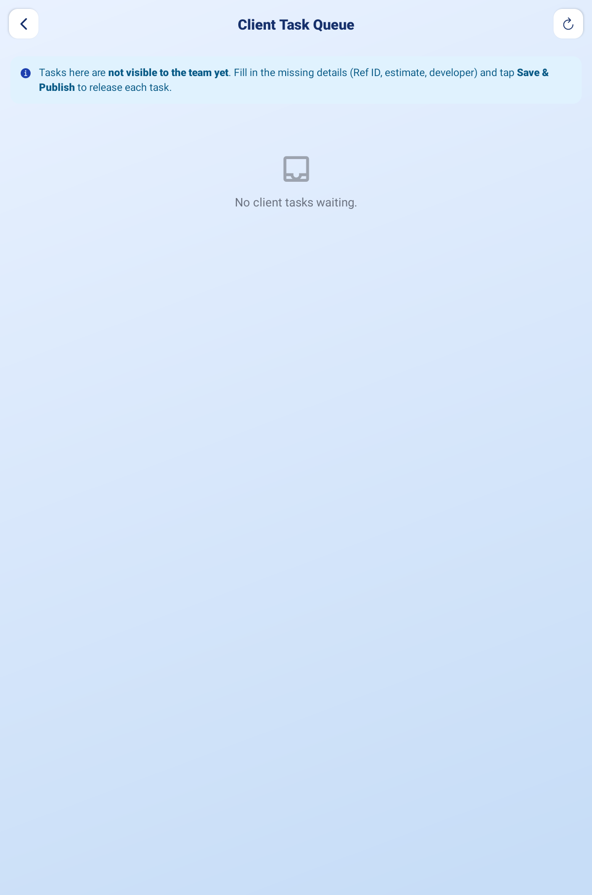 Client Task Queue — the task form with Assign Developer, Save and Save & Publish |
Upload Requirements, Upload Updates and Upload Bug Reports let you raise many tasks at once. All three work the same way and differ only in the reference they generate:
| Screen | Ref | For |
|---|---|---|
| Upload Requirements | REQ | New work. |
| Upload Updates | UPT | Changes and amendments. |
| Upload Bug Reports | BUG | Defects. |
The screen has four sections:
Tap Create All Tasks when ready. Anything that fails gets a Retry failed button.
| TIP Set Defaults for new rows before you import. It saves setting the same developer and priority on thirty rows one at a time. |
|
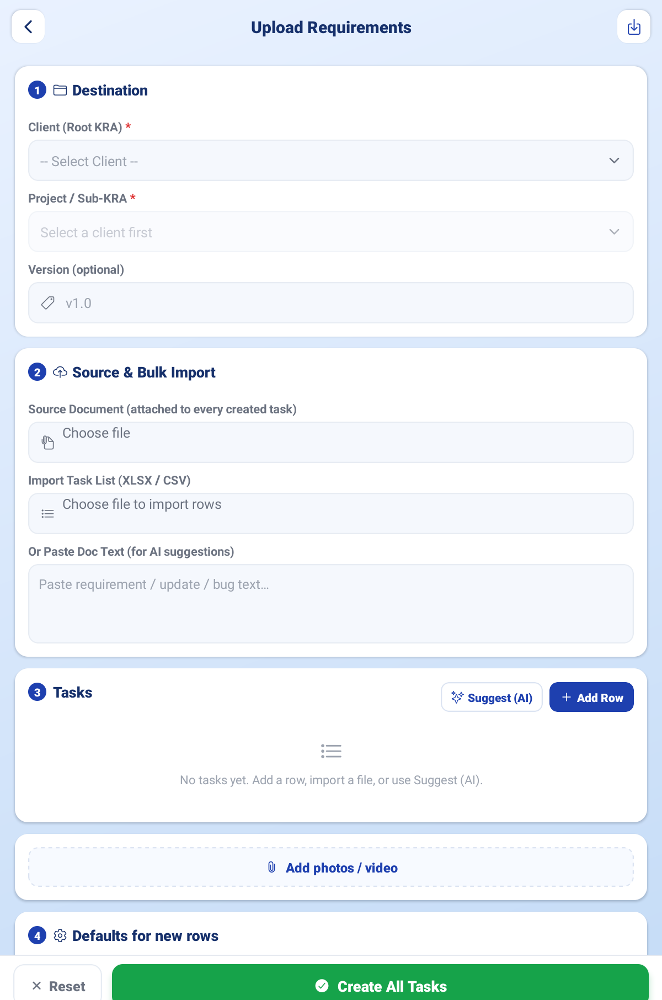 Upload Requirements — the four numbered sections |
Open Generate Client Files, pick a Client, a Project and a Version, and choose whether to include existing tasks as data. You get a ZIP containing three spreadsheets — Requirements, Updates and Bug Reports — ready to send to the client to fill in.
|
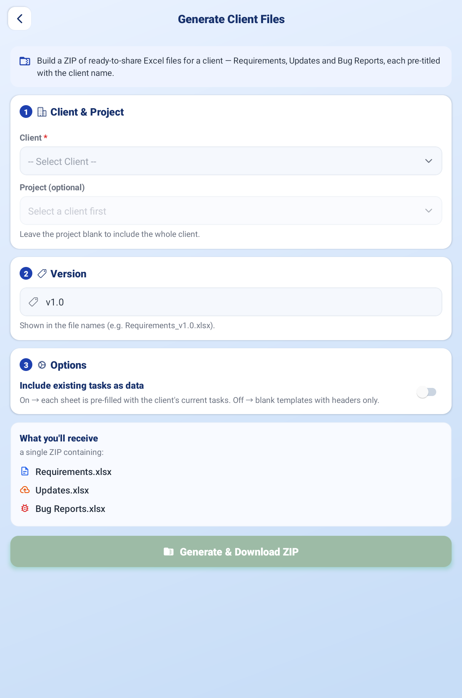 Generate Client Files — client, project and version pickers |
Open Live Tracking to see who is working on what, right now. It refreshes itself every 15 seconds.
| What you see | What it means |
|---|---|
| Present | Started their workday on time and is here. |
| Late came 10:24 | Here, but started after the cut-off. The time shown is when they started. |
| Absent | Has not started their workday and the cut-off has passed. |
| Yet to start | Has not started yet, but it is still early. |
| Idle — no task running | Their day is running but no task is active. Worth a nudge. |
| Not started | No workday session at all today. |
|
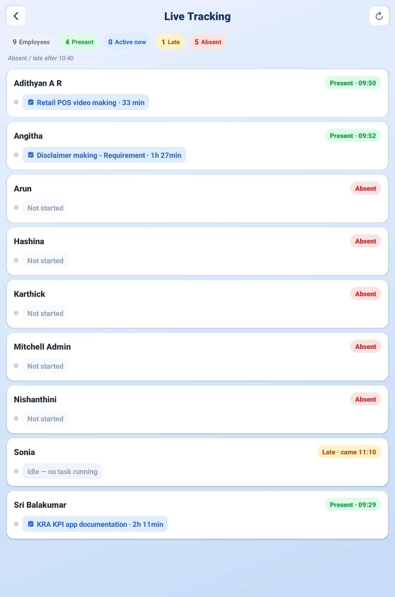 Live Tracking — the team list with attendance states and current tasks |
People working on the phone app now stay shown as active: the app checks in every 30 seconds, so nobody greys out just because they have not touched the screen. If the header reads “Not updating — last good reading HH:MM”, the screen could not refresh; the timers stop at that reading instead of running on, so what you see is the last figure you can trust.
| TIP On Android you can keep Live Tracking on your phone’s home screen. Long-press the home screen, choose Widgets, and add Live Tracking from KRA KPI — “Who is present and what your team is working on right now.” It shows up to three people depending on its size, and tapping it opens Live Tracking. Only admins see this widget. |
End Workday is one-way for the developer — one start and one end per day — so if somebody ends their day by accident, only an admin can give it back. From Live Tracking, reopen their day and type a reason.
The reason is sent to them word for word and shown on their board, because it is the only thing that explains why their day suddenly reopened. Their summary has already gone to the owner and coordinator by that point, so say plainly what changed.
Open KPI Action Board. A badge tells you whose tasks you are looking at — Coordinator · All for everyone's, or My Tasks for your own. Tap it to switch.
As an Admin your task cards carry extra buttons that Users never see: Accept, Reject, Approve, Revert, Reassign and Delete.
The first lane is 🕔 Today, in indigo — what has been worked on today, most time first. It is not a stage work moves through, so a task shows up there as well as in its own status lane; seeing the same card twice is correct. The lane’s tasks are deliberately left out of the board’s totals, so the counts still add up, and it empties itself at midnight.
Lanes with tasks come first and empty lanes drop to the bottom; inside a lane the most recently worked task is on top. A red card is a new task nobody has started yet — it stays at the top of Regular, Important or Urgent until someone starts it, or for 24 hours. Tasks on Hold or sent back for Rework sit in their priority lane.
|
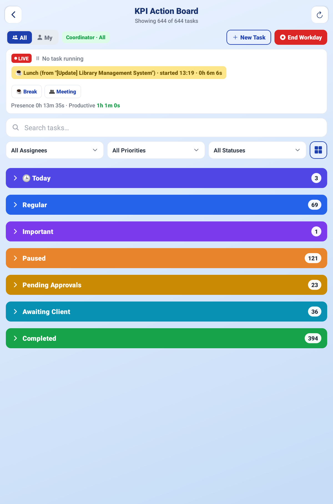 The Action Board as an admin — the “Coordinator · All” badge, the LIVE strip with a lunch break, and the lanes |
Open a task and tap Edit to open Edit task. You can change:
Only admins see Edit. Every change is recorded in the task’s Activity under Heading changes.
Work passes two gates before it can be billed. You control the first; the client controls the second.
When a team member raises their own task it lands in Pending Review. They can work on it straight away, but it does not count as billable until you accept it.
Tap Accept and set two things:
What the developer asked for is shown next to your choice, for example “Developer asked for Urgent”, so you can see where you are overriding them.
Tap Reject to send it back with a note explaining what to change — for example “Wrong project — move it under Alphalize > Phase 2.” The note is required — it is the only thing the developer gets. When they resume the task, they must answer it (What did you change?) before it runs again, and your acceptance clock restarts.
| TIP If nobody triages a task, it accepts itself after the time set in Configuration. The developer's card shows the deadline: “Waiting on admin — accepts automatically at 14:35.” Clear Pending Review each morning so the defaults are never what decides your billing. |
When a developer taps Complete, the task moves to Pending Approvals and waits for you. Open it and tap Approve. A quality checklist appears — work through it:
Approving sends the task to Awaiting Client for sign-off. Tapping Reject instead sends it back to the same developer with your reason. The reason must be at least 10 characters — if it is shorter, the app asks you to “Say a little more”.
The Approve and Reject boxes now show the task’s Description, so you can see what the work was for without leaving the dialog. Opening either one records “Review started” with your name and the time on the task.
| Button | What it does |
|---|---|
| Revert | Pulls a task back off the client's desk from Awaiting Client. Use it when you approved something too early. It will not work on a task the client has already signed off — that is a billing decision, not a workflow one. |
| Reassign | Moves a task to a different developer. Every reassignment is logged with its reason in Reassignment History. |
| Delete | Removes a task entirely. It only appears on tasks nobody has worked on — once time is logged against a task, the button is gone. You must say Why is it being deleted? (required), and that reason is sent to the developer and the client. |
Reassign is not offered on completed tasks, and Add time is not offered on someone else’s overrunning task.
What a task calls itself on screen is not always what you would guess. This table maps the ones that catch people out:
| On screen | What it actually means |
|---|---|
| Pending Review | Someone raised this themselves and you have not accepted it yet. |
| Verification Pending | A Partial Finish. The developer did what they could; you need to check it. There is no lane called “Partial”. |
| Pending Approvals | Finished by the developer, waiting on you. |
| Awaiting Client | You approved it; waiting on the client's sign-off. |
| Paused | Covers paused, on hold and sent-back-for-rework. |
| Completed | Client-signed-off. This is the only state that can be invoiced. |
The system builds a daily task report PDF per person, on the schedule you set in Configuration. Open Daily Reports to View, Download or Share any of them.
|
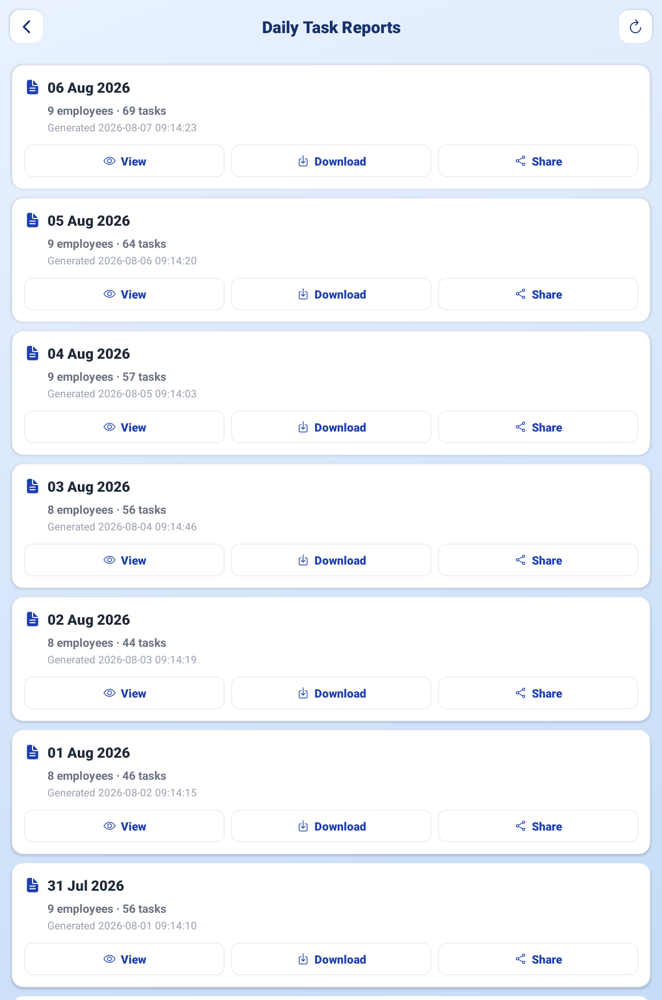 Daily Reports — the list with View / Download / Share |
Open Work Report to build a report over any period. Choose Today, This Week, This Month, Last Month or Custom; switch between Task-wise and Client-wise; optionally narrow to one client or leave it on All clients. Tap Generate, then PDF or Share. The PDF is built on the phone from the results on screen, and leaves the hours out when the Hours switch is off.
| TIP Client-wise over Last Month is the report to run before invoicing — it shows exactly what each client consumed. |
|
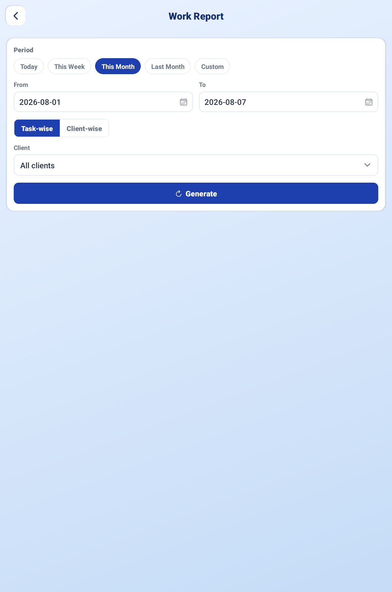 Work Report — period presets, Task-wise / Client-wise switch and Generate |
Open KRA Report for a task-by-task report of any set of KRAs, people and dates, which you can trim, add to and download as PDF, Excel or a ZIP.
| Filter | What it does |
|---|---|
| Period | Today, This Week, This Month, Last Month or Custom (From / To). |
| KRA | Pick one or more KRAs. You can also exclude a KRA, so “everything except Internal” is one step. |
| Employee, Type, State | Pick several at once. Each option shows how many tasks it covers. |
Tap Generate. You get the task, time and employee totals, a KRA summary you can hide, and the rows. Then:
| IMPORTANT If you change a filter after generating, you see “Filters changed — Generate again before downloading.” and the download buttons wait until you do. This stops you downloading a report that no longer matches the filters on screen. |
|
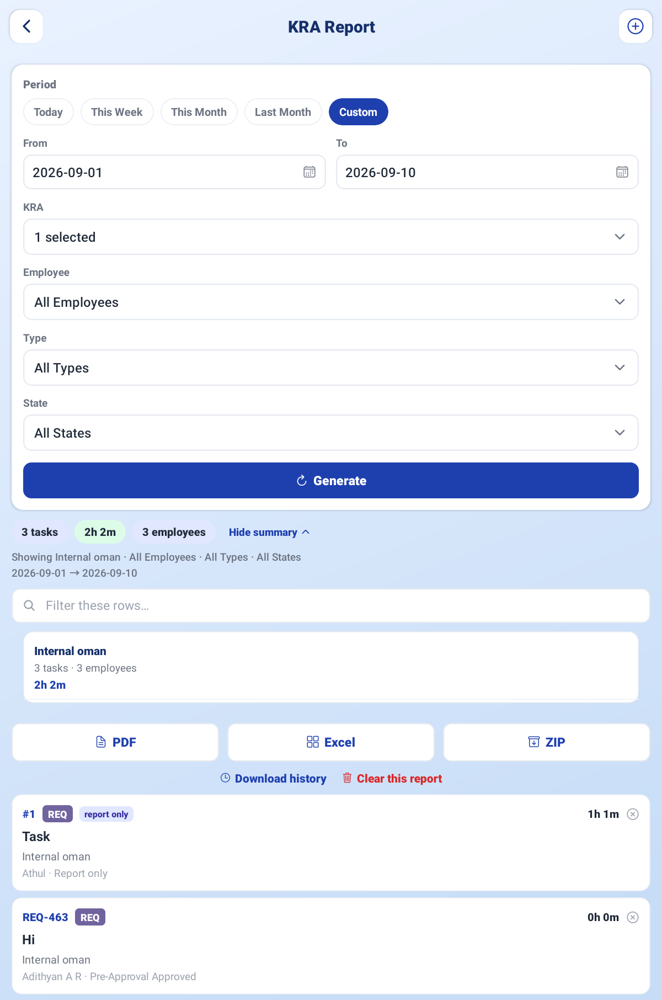 KRA Report — the filters, Generate, the summary, and the PDF / Excel / ZIP buttons above the rows |
Every download first asks what to include in Download options: Who (Everyone or Pick people), Period (The whole range, A day, A week or A month), Sort by, and Only rows with time worked. It tells you how many rows will be exported before it builds the file.
|
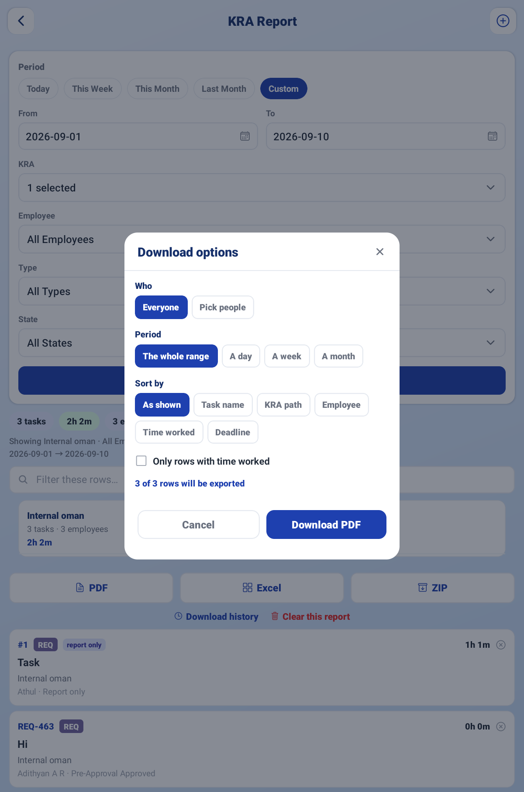 Download options — Who, Period, Sort by, and the count of rows that will be exported |
Open Employee Tracker for the whole team’s days — the admin’s version of My Workday. Choose Daily, Weekly or Monthly, and use the person picker (Everyone by default) to look at one person.
Each row shows Productive, Present and, where there was one, Paused time. Tap a row to see the time per task and the Sessions; a session the system closed at midnight is tagged auto.
|
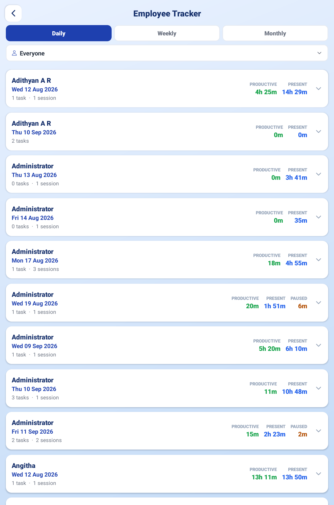 Employee Tracker — Daily / Weekly / Monthly, the person picker, and Productive / Present / Paused per day |
A saved image of every person's end-of-day summary. Drill down by date, then by developer, then open the image to View full size, Download or Share. How long these are kept is set in Configuration.
|
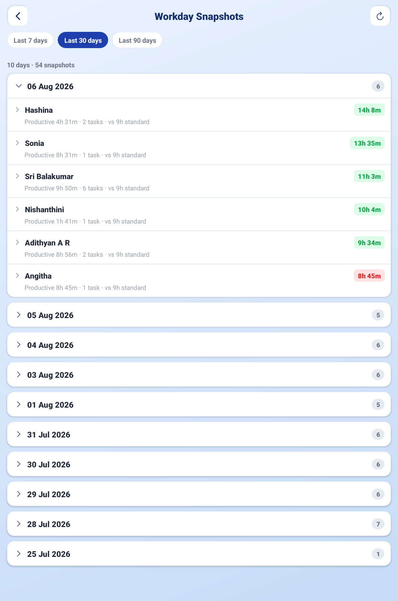 Workday Snapshots — date and developer drill-down |
A read-only record of every task that changed hands. Tap any entry for the reason and any pause information attached to it.
|
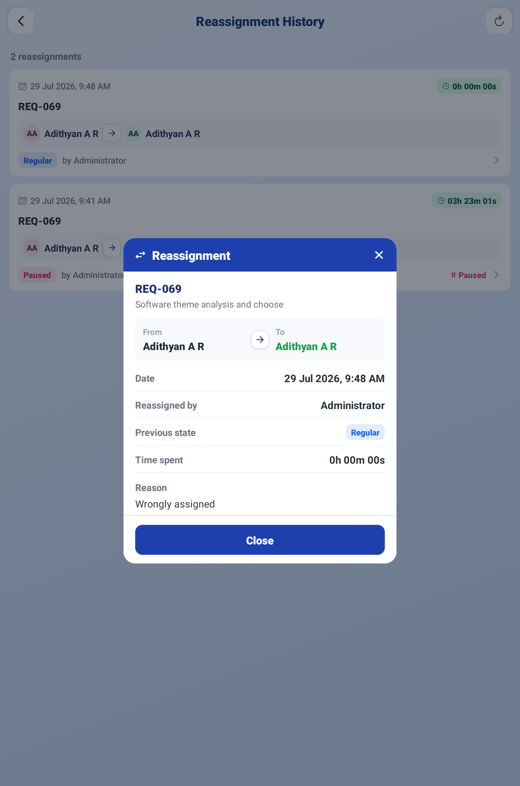 Reassignment History — the list and an opened entry |
Open Owner Dashboard. It shows certified tasks ready to invoice, grouped per client. Use Filter by Client or leave it on All clients, then View Certified Tasks to check the detail before you bill.
When you are happy, tap Generate Invoice. The app asks Create invoice? and explains that this creates a real draft invoice for that client; confirm to create it. The button is greyed out when a client has nothing certified to bill.
| IMPORTANT Only tasks the client has signed off appear here. A task the client auto-approved at the start is not billable — auto-release is permission to work, never permission to bill. |
|
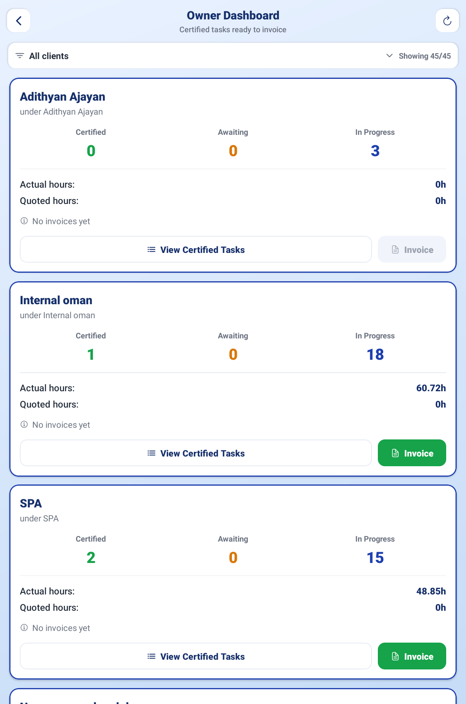 Owner Dashboard — per-client cards of certified tasks ready to invoice |
In Client Invoices, tap + to create one and set:
| Field | What to set |
|---|---|
| Client | Who you are billing. |
| Billing method | Per Hour (time actually worked) or Per Task (a fixed price per task type). |
| Hourly Rate | Your rate, when billing per hour. |
| Currency | The currency to bill in. |
| Period | The date range to pull tasks from. |
| Include Task Types | Tick any of Requirements, Updates / Amendments, Bug Fixes. At least one is required. Ticking all three also picks up tasks whose reference has no REQ / UPT / BUG prefix, so nothing is left out. |
You can add an ADJUSTMENT line for a discount or an agreed correction with Add Adjustment. It needs a description and the Hours as a number (for example 2 or 1.5) — “2h” is refused rather than quietly read as zero.
The invoice PDF is built on the phone and matches the one from the web: lines already billed on another invoice are left out, amounts are hidden when Show amounts is off, and your Overall Notes are printed on it.
|
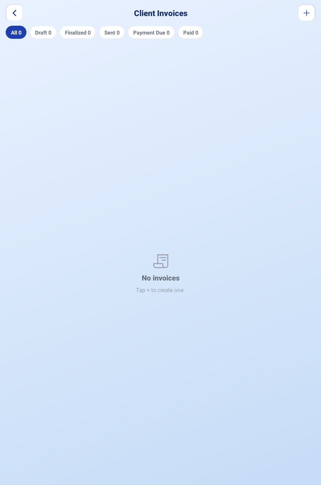 The Create Invoice form — billing method, rate, currency and task types |
| State | What it means |
|---|---|
| Draft | Yours to edit. The client cannot see it. |
| Finalized | Locked. Its tasks are now committed to this invoice. |
| Sent | Issued to the client. They can see it in their Invoices screen. |
| Payment Due | Issued and awaiting payment. |
| Paid | Settled. Use Mark Paid on the invoice row and record how it was paid. |
| Claimed | The client has raised a claim against it. It is its own filter on the Invoices screen, and it is not counted as due — while a claim is open the invoice cannot be revised or reset to draft. |
Revert undoes a payment marked in error. It requires a reason, and unlike the private payment notes that reason is published — it shows in red on the invoice row and as a banner on the invoice itself, on your side and the client’s. Write it for them to read.
Revising an invoice asks Why is it being revised? — the reason is required.
Use PDF and Share to send a copy outside the app.
| IMPORTANT Once a task is on a finalized or sent invoice it is locked and cannot appear on another one. This is what stops a client being billed twice for the same work. Check a draft carefully before you finalize it. |
Open User Manual and tap + Add. Set:
This is how these three guides get into the app. Upload each one against its own role:
| File | Visible to |
|---|---|
| kra-kpi-admin-manual.pdf | Admin |
| kra-kpi-client-manual.pdf | Client |
| kra-kpi-user-manual.pdf | Developer |
Role filtering is enforced on the server, so a client can never open the admin guide even if they know it exists. Only admins see + Add, Edit and Delete.
|
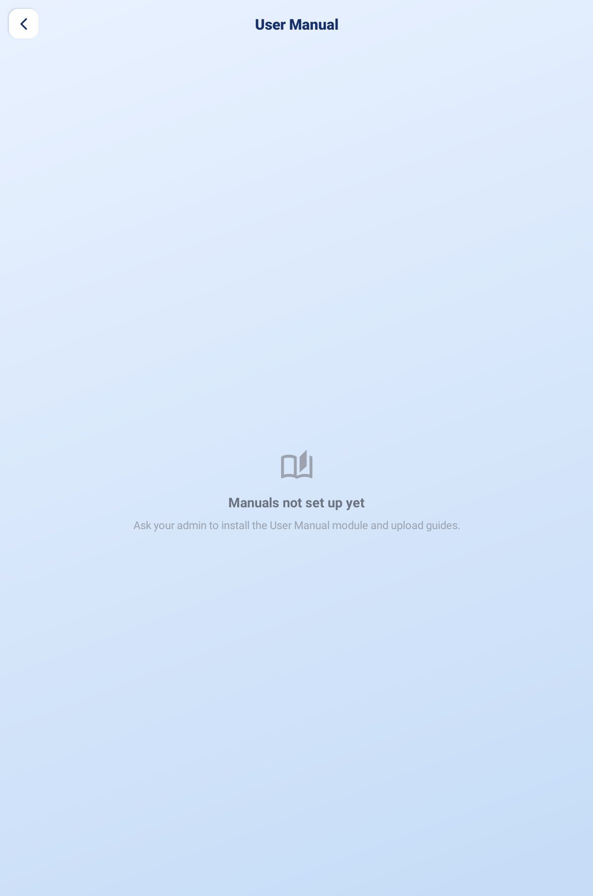 User Manual — the + Add form with Title, Visible to and PDF file |
| Channel | Used for |
|---|---|
| In-app notifications | The bell on Home. Everything is recorded here, sorted into All / Unread / Action needed. Cleared automatically after 30 days. |
| Push notifications | Alerts on the phone even when the app is shut. Tapping one opens the exact task, report or invoice. |
| Task alarms | Full-screen, ring-out-loud reminders that team members set on their own tasks. You do not set these for them. |
| Login codes, and the client approval links. |
| TIP The Action needed tab on the notifications screen is the shortest useful list in the app — it is only the things that will not move without you. Check it first each morning. It now also includes completed tasks, a team member with no tasks, a client saying they have paid, and a client rejecting work. |
Break, lunch and meeting over-run reminders (set in Configuration) go to the developer only — they do not appear in your notifications.
| Action | Admin | Client | User |
|---|---|---|---|
| Start / end a workday | Not required | Not required | Required |
| Work on tasks | Yes | No | Yes |
| Create a task | Yes | Via upload | Yes (New Task) |
| Accept / reject new tasks | Yes | No | No |
| Approve finished work | Yes | No | No |
| Approve the assigned developer | No | Yes | No |
| Sign off delivered work | No | Yes | No |
| Reassign / delete a task | Yes | No | No |
| See everyone's tasks | Yes | Own only | Own only |
| Create invoices | Yes | View only | No |
| Change configuration | Yes | No | No |
| Upload manuals | Yes | No | No |
| Edit a task (name, type, project) | Yes | No | No |
| KRA Report / Employee Tracker | Yes | No | No |
| Own reminders | Yes | No | Yes |
| Triage in the morning, watch the day, approve as it lands, and bill what the client has signed. That is the whole rhythm. |
— End of Guide —
Alphalize | KRA / KPI Admin Guide